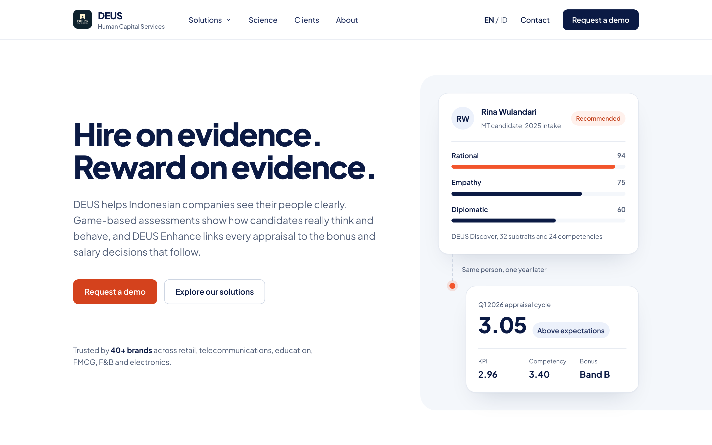
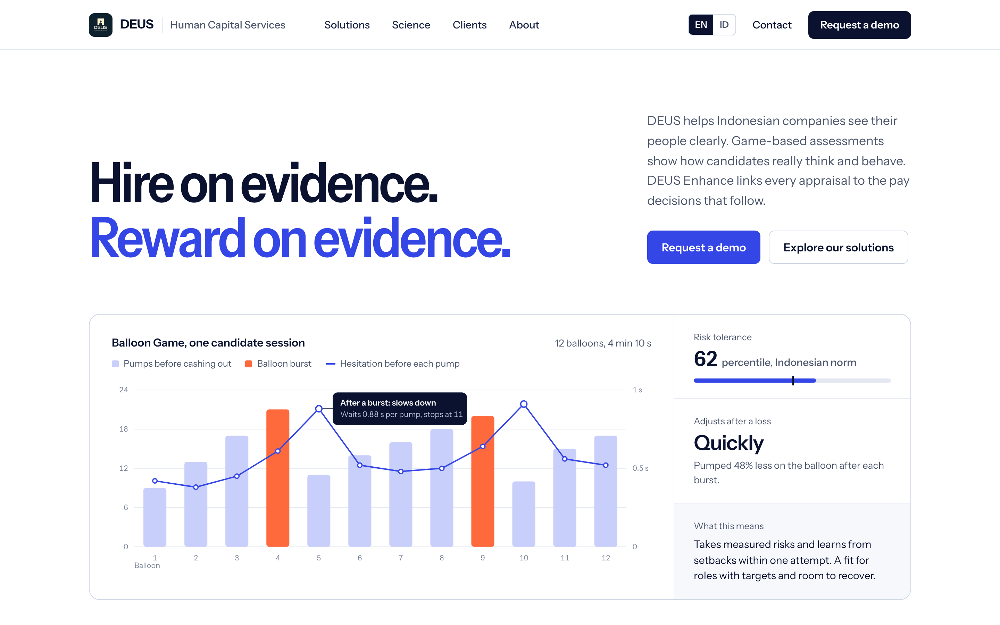
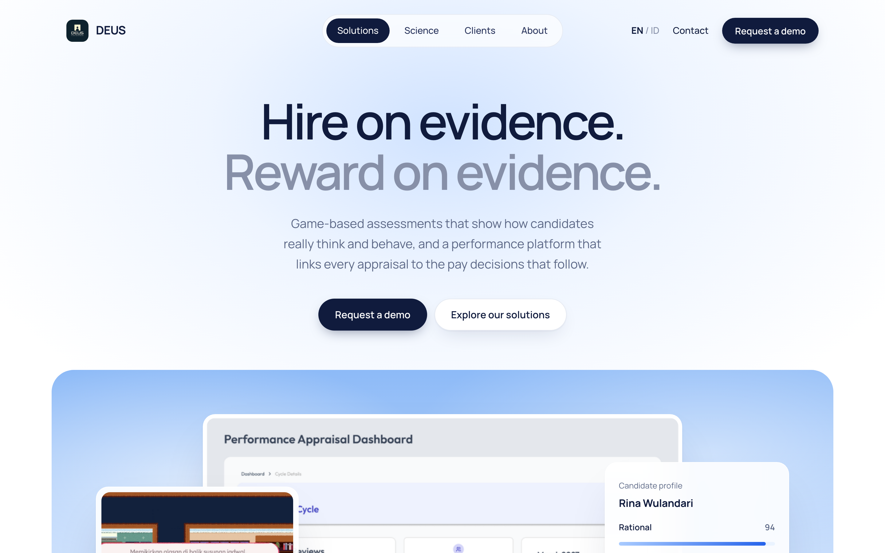

Same content and same viewport (1440 × 900), three visual systems.

A · EvidenceThe current brand, refined. Navy and orange, Plus Jakarta Sans ExtraBold, hairline rules, product data cards.
B · SignalA data instrument. Ink and cobalt from the Enhance UI, narrow Instrument Sans, a live-looking chart in the hero.
C · DaylightAiry and premium. Centered layout, Manrope SemiBold, product screens floating in a sky gradient.